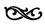
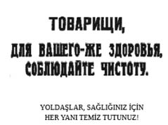

BÖLÜM II

FIRTINA GELİYOR


Eylülde General Kornilov Rusya’nın askerî diktatörü olmak amacıyla Petrograd üzerine yürüdü. Arkasında, devrimi ezmeye çalışan burjuvazinin sıkılmış yumruğu olduğu hemen ortaya çıktı. Sosyalist bakanlardan bazılarının işin içinde olduğu anlaşıldı; Kerenski’den bile şüphe ediliyordu (1). Sosyalist Devrimciler Partisi Merkez Komitesi’ni toplayarak açıklama yapmak isteyen Savinkov’u kimse dinlemedi ve Savinkov partisinden atıldı. Asker komiteleri Kornilov’u yakaladılar. Generaller atıldı, bakanlar görevlerinden alındı ve kabine düştü.
Kerenski, burjuvazinin partisi olan Kadet’i de içine alacak yeni bir hükümet kurmaya çalıştı. Sosyalist Devrimci Parti, yani kendi partisi, Kerenski’ye, kabineye Kadetleri almamasını emretti. Kerenski bu emri dinlemedi ve sosyalistler bu konuda dayattıkları takdirde çekileceğini söyledi. Öte yandan genel tepki bu konuda o kadar şiddetli oldu ki Kerenski daha fazla dayatamadı ve eski bakanlardan beşiyle birlikte geçici bir diktatörlük kurup başına geçti, böylece sorun bir sonuca bağlanıncaya kadar iktidarı eline geçirmiş oldu.
Kornilov olayı, bütün sosyalist grupları (“ılımlılar”dan devrimcilere kadar) ister istemez bir araya getirdi. Artık Kornilovlar olmamalıydı. Devrimi destekleyen unsurlara karşı sorumluluk taşıyacak yeni bir hükümet kurulmalıydı. Çayika, halk örgütlerinden, Eylülde Petrograd’da toplanacak olan demokratik bir konferansa delege göndermelerini istedi.
Çayika hemen üç parçaya ayrıldı. Bolşevikler Rusya çapındaki Sovyetler Kongresi’nin toplanıp iktidarı ele almasını talep etti. Çernov’un liderliğindeki “Merkez” Sosyalist Devrimcileri ise Kamkov ve Spiridonova’nın yönettiği Sol Sosyalist Devrimcilerle, Martov’un liderlik ettiği Menşevik Enternasyonalciler, Bogdanov ve Skobelyev’in temsil ettiği “Merkez” Menşevikleri ile birleşerek yalnızca sosyalistlerden oluşan bir hükümetin kurulmasını istiyordu. Sağ kanat Menşeviklerin başında bulunan Tseretelli, Dan ve Lieber ile, Avksentiyev ve Gotz’un liderlik ettiği Sağ Sosyalist Devrimciler mülk sahibi sınıfların da yeni hükümette temsil edilmelerinde diretiyordu.
Bolşevikler Petrograd Sovyeti’nde çarçabuk çoğunluğu kazanıverdi ve Moskova, Kiev, Odesa ve öteki şehirlerdeki sovyetler de Petrograd’ı izledi.
Çayika’yı elinde tutan Menşeviklerle Sosyalist Devrimciler bu sonuçtan duydukları ürküntüyle bundan böyle Lenin’in Kornilov’dan daha büyük bir tehlike olduğu kararına vardılar. Demokratik Konferans’ta (2) temsiliyet sorununu yeniden gözden geçirerek kooperatiflerle öteki tutucu kurumların delegelerine konferansta daha çok yer ayırdılar. Bu küçük toplantıda bile ilk karar olarak Kadet’siz koalisyona gidilmesinden yana oy verildi. Ancak Kerenski’nin açık çekilme tehdidi, “ılımlı” sosyalistlerin “Cumhuriyet tehlikede!” diye bağırmaları üzerine Konferans, küçük bir çoğunlukla, prensip olarak burjuvazi ile koalisyona gidilmesinden yana olduğunu açıkladı ve Rus Cumhuriyeti Geçici Konseyi adı altında, yasama gücü olmayan, bir çeşit istişari parlamentonun kurulmasını kabul etti. Mülk sahipleri sınıfı yeni kabineyi fiilen denetliyor ve Rusya Cumhuriyeti Konseyi’nde orantısız sayıda koltuğa sahip bulunuyordu.
Çayika’nın artık sovyetlerin alt kademelerini temsil etmediği ve Eylülde toplanacak olan bütün Rusya çapındaki Sovyetler Kongresi’ni toplamamak için el altından çalıştığı bir gerçekti. Bu kongreyi toplamaya ya da toplanmasına izin vermeye hiç niyeti yoktu. Resmî organları olan İzvestiya (Haberler) gazetesinde, sovyetlerin görevinin hemen hemen bitmiş olduğu (3), çok kısa süre içinde dağıtılabileceği dolaylı olarak söyleniyordu... Bu sırada, yeni hükümet de, “sorumsuz örgütlerin”, yani sovyetlerin dağıtılmasını, izleyeceği politikanın içine aldığını açıkladı.
Bolşevikler, hükümetin bu tutumuna, bütün Rusya’daki sovyetleri 2 Kasımda Petrograd’da toplantıya çağırarak ve sovyetlerden iktidarı devralmasını isteyerek karşı koydu. Öte yandan da, “Halka ihanet eden bir hükümete” katılamayacaklarını söyleyerek Rusya Cumhuriyeti Konseyi’nden çekildiler (4).
Bolşeviklerin çekilmesi talihsiz konseyi yine rahata kavuşturamadı. İktidarı ele geçirmiş olan mülk sahibi sınıflar küstahlaştılar. Kadetler, hükümetin Rusya’da cumhuriyet ilanına kanunen hakkı olmadığını söyledi. Asker ve bahriyeli komitelerini ortadan kaldırmak için orduda ve donanmada sert tedbirler alınmasını isteyip sovyetleri kötülediler. Oysa toplantı salonunun öte yanında olan Menşevik Enternasyonalcilerle Sol Sosyalist Devrimciler hemen barış yapılmasını, köylüye toprak verilmesini, işçilerin sanayide denetimi ele almasını istiyordu. Bu istekler Bolşevik programındakilerin hemen hemen aynıydı.
Martov’un Kadetlere söylediklerini dinledim. Sanki ölüm derecesinde hastaymış gibi kürsüde öne doğru eğilmişti. O kadar ağır bir tonla konuşuyordu ki sesi işitilmiyordu bile. Sağdaki koltuklara doğru parmağını sallıyordu:
“Siz bize bozguncu diyorsunuz, ama asıl bozguncular barış yapmak için daha elverişli zamanı bekleyenler, Rus ordusu diye bir şey kalmayıncaya, Rusya ayrı ayrı emperyalist gruplar arasında pazarlık konusu oluncaya kadar barışı ertelemeye çalışanlardır... Siz Rus halkına burjuvazinin çıkarına uygun bir politika kabul ettirmek istiyorsunuz. Barış sorunu zaman geçirmeden hemen ele alınmalıdır... O zaman, Alman casusu dediğiniz, bütün ülkelerdeki demokratik halk yığınlarının bilincini uyandırmaya çalışan Zimmervalistlerin2 boşuna çalışmadıklarını göreceksiniz...”
Menşeviklerle Sosyalist Devrimciler bu iki grup arasında bocalıyor, halk yığınlarının artan hoşnutsuzluğu onları zorla sola itiyordu... Derin düşmanlıklar, Meclisi birbiriyle uzlaşmayan iki gruba ayırmıştı.
Paris’te toplanan Müttefikler Konferansı’nın uzun zamandan beri beklenen bildirisi dış politika sorununu birinci plana çıkardığı sırada durum böyleydi...
Kuramsal olarak Rusya’daki bütün sosyalist partiler en kısa zamanda demokratik şartlarla barış yapmak istiyordu. Ta 1917 Mayısında, o sıralarda Menşeviklerle Sosyalist Devrimcilerin elinde bulunan Petrograd Sovyeti, herkesçe bilinen Rus barış şartlarını açıklamıştı. Müttefiklerden savaş amaçlarını tartışmak üzere bir konferans toplamaları isteniyordu. Konferansın Ağustosta toplanması kararlaştırıldı; sonra Eylüle ertelendi, sonra Ekime; şimdi de konferans günü 10 Kasım olarak tespit ediliyordu.
Geçici Hükümet iki temsilci ileri sürdü: Biri, gerici bir asker olan General Alekseyev, öteki Dışişleri Bakanı Teresçenko. Sovyetler Skobeliyev’i kendi sözcüleri olarak seçmiş ve bir bildiri hazırlamışlardı. Buna ünlü nakaz (talimat) (5) denir. Geçici Hükümet Skobeliyev’e ve nakaz’ına itiraz etti; müttefik elçileri protestolar yağdırdı ve sonunda Bonar Law, İngiliz Avam Kamarası’nda soğuk bir hava içinde şu sözleri söyledi: “Bildiğim kadarıyla Paris Konferansı savaşın amaçlarını değil, yalnızca savaşı yönetme yollarını tartışacaktır...”
Rus tutucu basını bu açıklamaya çok sevindi, Bolşevikler bunun üzerine bağırdı: “Menşeviklerle Sosyalist Devrimcilerin uzlaştırıcı taktiklerinin onları nerelere götürdüğünü işte görüyorsunuz!”
Binlerce kilometre uzayan cephe boyunca Rus ordusundaki milyonlarca asker deniz gibi dalgalanıyor, başkente heyet üstüne heyet gönderiyor, “Barış! Barış!” diye bağırıyordu.
Nehrin öte yanında bulunan Modern Sirk’e gittim. Şehrin her yanında her gece gittikçe artan büyük mitinglerden biri vardı. Çıplak, karanlık bir amfi, içinde bir telle tavana asılmış beş küçük ampul, tavana kadar dimdik yükselen sıralar tıklım tıklım insan dolu: askerler, bahriyeliler, işçiler, kadınlar... Hepsi de hayatları sanki söylenilen sözlere bağlıymış gibi dikkat kesilmiş, dinliyor. Bir asker konuşuyor, 548. Tümen’den. Nerede bu tümen, nasıl bir tümen bilinmiyor.
“Yoldaşlar!” diye bağırıyor. Gergin yüzünde ve halsiz hareketlerinde korkunç bir acılık var. “Yukardakiler bize durmadan, ‘biraz daha fedakârlık, biraz daha,’ deyip duruyorlar, ama ellerinde her şeyi tutanlara kimse dokunmuyor...
Almanya ile savaştayız, Almanları çağırıp bizim Genelkurmay’da çalıştırıyor muyuz? Öte yandan kapitalistlerle de savaştayız, ama onları hükümetimize çağırıyoruz...
Asker der ki: ‘Ne için savaştığımızı bize gösterin. İstanbul’u almak için mi, yoksa özgür bir Rusya kurmak için mi? Demokrasi için mi, yoksa kapitalist soyguncular için mi?’ Eğer devrimi koruduğumu bana ispat edebilirseniz idam cezası vermeseniz de yine gider dövüşürüm...”
Kışlalarda, fabrikalarda, köşe başlarında sonsuz sayıda asker konuşup duruyor, hepsi de savaşa bir son verilmesini istiyor, eğer hükümet barış için enerjik çıkışlar yapmayacak olursa ordunun siperleri bırakıp eve döneceğini haykıra haykıra söylüyordu.
8. Ordu sözcüsü:
“Eridik bittik, her bölükte birkaç kişi kaldık. Bize yiyecek, ayakkabı ve takviye gönderilmeli, yoksa yakında cephede yalnız boş siperler kalacak. Ya barış ya da teçhizat ve iaşe... Ya hükümet savaşa son verir ya da orduyu destekler. Başka çare yok...”
46. Sibirya Topçu Alayı adına konuşan:
“Subaylar bizim komitelerimizle birlikte çalışmayacak, onlar bizi düşmana satıyor, propagandacılarımıza ölüm cezası veriyor ve devrim düşmanı hükümet onları destekliyor. Devrimin barış getireceğini sanmıştık. Oysa hükümet şimdi bu konuları konuşmayı bile yasak etti. Öte yandan bize yaşamamız için gerekli gıdayı ya da savaşmamız için gereken cephaneyi veremiyor...”
Avrupa’dan, Rusya’nın sırtına basılarak bir barış anlaşmasına varılacağına dair söylentiler geliyor...(6)
Fransa’daki Rus askerlerine yapılanlar üzerine gelen haberler hoşnutsuzluğu büsbütün arttırmıştı: 1. Tugay anavatandaki arkadaşlarının yaptığı gibi subayların yerine asker komitelerini geçirmek istemiş, Selanik’e gitme emrini dinlememiş, Rusya’ya dönmek istemiş. Bunun üzerine tugay sarılmış ve aç bırakılmış, sonra üzerlerine top ateşi açılmış, pek çok asker öldürülmüş... (7)
29 Ekim günü, barışa ve toprağa susamış bütün Rusların korkunç bir tutku ile bekledikleri açıklamayı dinlemek üzere Cumhuriyet Konseyi’nin bulunduğu Marinski Sarayı’nın beyaz mermer döşeli kırmızı salonundaydım. Teresçenko, hükümetin dış politikasını açıklayacak.
Tüysüz, çıkık elmacık kemikli, çok temiz giyinmiş uzun boylu bir genç, içinde yuvarlak lafların özel bir dikkatle seçilmiş olduğu bir söylevi okuyor...(8) Söylevde hiçbir şey yok... Yalnızca müttefiklerin yardımıyla Alman militarizminin yenileceği, Rusya’nın “devlet çıkarları”, Skobeliyev nakaz’larının yarattığı “huzursuzluk”; hepsi bu kadar... Sözlerine şöyle son verdi:
“Rusya büyük bir devlettir; ne olursa olsun büyük bir devlet olarak kalacaktır. Hepimizin onu savunması gerekir. Büyük bir ülkünün savunucuları ve büyük bir devletin çocukları olduğumuzu ispat etmeliyiz.”
Kimse memnun değildi. Gericiler “kuvvetli” bir emperyalist politika istiyordu, demokratik partiler hükümetin barış için baskı yapacağına dair teminat... Bolşevik Petrograd Sovyeti’nin organı olan Raboçi i Soldat (İşçi ve Asker) gazetesinin başyazısını alıyorum :
HÜKÜMETİN SİPERDEKİLERE VERDİĞİ CEVAP
Bakanlarımızın en sessizi olan Bay Teresçenko siperdekilere aşağıdaki sözleri söyledi:
1. Biz müttefiklerimize sıkı sıkıya bağlıyız. (Halklara değil, hükümetlere.)
2. Demokraside bir kış seferinin olanaksızlığı ya da olanaklılığı üzerinde tartışmanın bir yararı yoktur. Bu, müttefiklerimizin hükümetlerince kararlaştırılacaktır.
3. 1 Temmuz saldırısı çok iyi oldu ve çok mutlu bir olaydı. (Sonuçlarından söz yok.)
4. Müttefiklerimizin bizi düşünmedikleri doğru değil. Bakanımızın elinde çok önemli açıklamalar var. (Açıklamalar mı? Ya yapılan işler? İngiliz filosunun yaptığı işler? (9) Ya İngiliz kralının devrim düşmanı Gurko ile yaptığı konuşma? Bakan bunlara hiç değinmiyor.)
5. Skobeliyev’in nakaz’ı çok kötü, Müttefikler beğenmiyor. Rus diplomatları da beğenmiyor. Müttefikler Konferansı’nda “aynı dili kullanmalıyız”.
Hepsi bu kadarcık mı? Evet hepsi bu kadar. Peki biz ne yapacağız? Bu işin çözümü şu: Müttefiklerimize ve Bay Teresçenko’ya inanacağız. Peki, barış ne zaman gelecek? Müttefiklerimiz ne zaman izin verirlerse!
İşte hükümet siperlerden gelen barış isteğine bu cevabı verdi.
Bu sırada Rus politikasında kötü bir kuvvetin belirtileri hafif hafif sezilmeye başlamıştı; bunlar Kazaklardı. Gorki’nin gazetesi Novaya Jizn (Yeni Hayat) Kazakların çalışmalarına dikkat çekti:
Devrimin başlangıcında Kazaklar halkı öldürmek istemedi. Kornilov Petrograd’a yürüdüğü zaman onun arkasından gitmediler. Kazaklar şimdi devrime pasif olarak bağlı kalma durumundan devrime karşı aktif olarak çalışma durumuna geçmektedir. Devrimin arka planında dururken birdenbire ön plana geçtiler...
Don Kazaklarının atamanı olan Kaledin, Kornilov olayına adı karıştığı için Geçici Hükümet tarafından görevinden alınmıştı. Kaledin istifa etmeyi kabul etmedi, Novoçerkask’taki büyük Kazak ordularını çevresine topladı, komplolar kurdu, korkuttu. Kaledin’in o kadar büyük kuvveti vardı ki hükümet onun itaatsizliğine göz yummak zorunda kaldı. Dahası var: Kazak Orduları Birliği Konseyi’ni resmen tanımak ve yeni kurulan Sovyetler Kazak Kolu’nu yasadışı ilan etmek durumuna kadar düştü.
Ekim başında bir Kazak heyeti Kerenski’yi ziyaret etti, Kaledin’e karşı yöneltilen suçlamalara bir son verilmesini Kerenski’den küstahça bir tavırla istedi ve sovyetlere yüz verdiği için Başbakan’ı azarladı. Kerenski, Kaledin’e dokunmamayı kabul etti. Sonra kendisinin şu sözleri söylediği anlaşılıyor: “Sovyet liderlerine göre ben bir despotum... Ama Geçici Hükümet sovyetlere dayanmadığı gibi, bunların varlığını kötü bir şey de saymaktadır.”
Başka bir Kazak heyeti de aynı zamanda İngiliz elçisini ziyaret ediyordu. Heyet, elçi ile açıkça, “Özgür Kazak halkı”nın temsilcileri olarak konuşmuştu.
Don’da Kazak cumhuriyetine benzer bir örgüt kurulmuştu. Kuban kendisini bağımsız bir Kazak devleti ilan etmişti. Silahlı Kazaklar, Don üzerindeki Rostov ile Yekaterinburg sovyetlerini dağıtmış, Harkof’taki Kömür Madencileri Sendikası’na saldırılmıştı. Kazak hareketinin sosyalizme karşı ve militarizmden yana bulunduğu anlaşılıyordu. Liderleri, Kaledin, Kornilov, General Dutov, Karaulov ve Bardizhe gibi soylular ve büyük toprak sahipleriydi; kuvvetli tüccarlar ve Moskova bankerleri tarafından da destekleniyorlardı.
Eski Rusya hızla parçalanıyordu. Ukrayna’da, Finlandiya’da, Polonya’da, Beyaz Rusya’da milliyetçi hareketler güçleniyor ve gittikçe ortaya çıkıyordu. Mülk sahibi sınıfların elinde bulunan mahalli hükümetler bağımsızlıklarını ilan ediyor, Petrograd’dan gelen emirleri dinlemiyordu. Helsingfors’taki Fin Senatosu, Geçici Hükümet’in istediği krediyi vermedi, Finlandiya’nın bağımsızlığını ilan etti ve Rus askerlerinin Finlandiya’dan çekilmesini istedi. Kiev’deki burjuva Rada’sı Ukrayna’nın sınırlarını Güney Rusya’nın en zengin tarım topraklarını içine alacak biçimde Urallar’a kadar genişletti ve bir milli ordu kurmaya başladı. Başbakan Vinniçenko Almanlarla ayrı bir barış anlaşması yapmak istedi. Geçici Hükümet bütün bunlar karşısında hiçbir şey yapamıyordu. Sibirya, beri yandan Kafkasya ayrı Kurucu Meclis istedi. Bütün bu ülkelerde hükümet makamları ile mahalli sovyetler arasında sert bir savaş başlamak üzereydi...
Durum gün geçtikçe de karıştı. Yüz binlerce asker cepheden kaçıyor, geniş, başıboş dalgalar halinde ülkenin dört bir yanına yayılıyordu. Toprağın dağıtılmasını beklemekten bıkıp usanan ve hükümetin aldığı sert tedbirlere kızan Tambov ve Tver hükümetlerinde köylüler malikâneleri yakıyor, derebeyleri öldürüyordu. Moskova’da, Odesa’da ve Don kömür madenlerinde büyük grevler ve lokavtlar oluyordu. Ulaştırma araçları çalışamaz durumdaydı; ordu açtı ve büyük şehirlerde ekmek yoktu.
Hükümet demokratik eğilimlerle gerici eğilimler arasında kalmıştı, elinden hiçbir şey gelmiyordu; harekete geçmek zorunda kaldığı zaman mülk sahibi sınıfların çıkarlarını destekliyor, köylüler arasında düzeni sağlamak, grevlerin önüne geçmek için Kazakları gönderiyordu. Taşkent’te hükümet makamları sovyetleri kapatmıştı. Ülkenin bozulan ekonomik düzenini yeniden düzenlemek üzere Petrograd’da kurulan Ekonomik Konsey, birbirine düşman sermaye ile emek güçleri arasında çalışamaz duruma düşmüş ve sonunda Kerenski tarafından dağıtılmıştı. Kadetlerin desteklediği eski rejime bağlı yüksek subaylar, ordu ve donanmada disiplini yeniden kurmak için çok şiddetli tedbirlerin alınmasını istiyordu. İyi bir insan olan Donanma Bakanı Amiral Verderevski ile Savaş Bakanı General Verkovski, ordu ve donanmada disiplinin ancak asker ve bahriyeli komiteleriyle işbirliğine dayanan, yeni ve gönüllü demokratik bir disiplin anlayışıyla sağlanabileceğini söylüyor, ancak kimse anlamıyor, öğütlerine kimse kulak asmıyordu.
Gericiler halkı sanki kızdırmaya karar vermişti. Kornilov’un yargılanma günü yaklaşıyordu. Burjuva basını Kornilov’u gün geçtikçe daha açıkça savunuyor, kendisinden, “Büyük Rus vatanseveri” diye söz ediyordu. Burtzev’in gazetesi Obşi Diyelo (Ortak Dava) Kornilov, Kaledin ve Kerenski’nin kuracakları bir diktatörlük istiyordu.
Bir gün Cumhuriyet Konseyi’nin salonunda Burtzev’le konuştum. Ufak tefek, sırtı kamburlaşmış, yüzü buruşmuş bir adam. Kalın gözlükler arkasında miyop gözler. Ağarmış pis saçlar ve sakal.
“Sen benim sözlerime dikkat et delikanlı! Rusya’ya gerekli olan kuvvetli adam. Şimdi devrimi bir yana bırakıp Alman sorununu çözmeliyiz. Kornilov’u alaşağı etmek için herkes elinden geleni yapıyor; bunların arkasında Alman casusları var. Kornilov kazanmalıdır...”
Aşırı sağda, Monarşistlerin çıkardığı belli olan Purişkeviç’in Narodni Tribun (Halk Kürsüsü), Novaya Rus (Yeni Rusya) ve Zivoye Slovo (Yaşayan Söz) gazeteleri devrimci demokrasinin ortadan kaldırılmasını açıkça savunuyordu...
23 Ekimde Riga körfezinde Alman filosu ile bir deniz savaşına tutuşuldu. Geçici Hükümet Petrograd’ın tehlikede olduğunu ileri sürerek başkenti boşaltma hazırlıkları yapmaya başladı. Önce mühimmat fabrikaları nakledilecek, Rusya’nın her yanına dağıtılacaktı; sonra da hükümet Moskova’ya gidecekti. Bolşevikler birdenbire, “Hükümet devrimi güçten düşürmek için kızıl başkenti bırakmak istiyor!” diye feryada başladı. Riga Almanlara satılmıştı; şimdi de Petrograd’a ihanet edilecekti!
Burjuva basını seviniyordu. Kadetlerin çıkardığı Riyeç (Söylev) gazetesi, “Moskova’da” diyordu, “hükümet, işini daha sakin bir hava içinde, anarşistlerin müdahalelerinden uzak olarak, daha rahatça görebilir.” Kadet Partisi’nin sağ kanat lideri Rodziyanko, Utro Rossi (Rusya Sabahı) gazetesinde Almanların Petrograd’ı almaları daha iyi olur, diyordu, çünkü Almanlar sovyetleri ortadan kaldırır ve devrimci Baltık Donanması’ndan da kurtuluruz:
Petrograd tehlikede (diye yazıyordu). Kendi kendime diyorum ki, ‘Petrograd’ı biz Tanrıya bırakalım,’ Petrograd düşerse merkezi devrimci örgütlerin ortadan kaldırılacağından korkuyorlar. Buna şu cevabı veriyorum: Bu örgütlerin tümü ortadan kaldırılsa daha çok sevinirim; çünkü bunlar Rusya’ya felaketten başka bir şey getirecek değiller... Petrograd alınırsa Baltık Donanması da tahrip edilecektir... Ama ne diye üzülelim? Gemilerin çoğunda moral diye bir şey kalmadı ki...
Genel hoşnutsuzluk karşısında başkentin boşaltılması fikrinden vazgeçildi.
Bu sırada Sovyetler Kongresi Rusya’nın üzerine kara bir bulut gibi çöktü ve dört bir yana şimşekler yağdırmaya başladı. Kongreye yalnız hükümet değil, bütün “ılımlı” sosyalistler de karşıydı. Ordu, donanma ve bazı sendikaların merkez komiteleri, köylü sovyetleri, ama en başta Çayika toplantıyı önlemek için elinden geleni yapıyordu. Petrograd Sovyeti’nin kurduğu, ama şimdi Çayika’nın ele geçirdiği İzvestiya ve Golos Soldata (Askerin Sesi) gazeteleri de, Sosyalist Devrimci Parti’nin yayımladığı Diyelo Naroda (Halkın Davası) ile Volya Naroda (Halkın İradesi) gazeteleri gibi, toplantıya karşı söylemediklerini bırakmıyorlardı.
Yurdun her yanına delegeler gönderiliyor, yerel sovyetleri ellerinde bulunduran komitelere, ordu komitelerine telgraflar çekiliyor, kongre seçimlerini durdurmaları ya da ertelemeleri isteniyordu: Kongreye karşı alınan ciddi genel kararlar; Kurucu Meclis’in toplanmasına bu kadar kısa zaman kaldığı bir sırada bu yoldan demokrasiye karşı gelinmek istendiğine dair bildiriler; cepheden, Zemstvolar Birliği’nden, Kazak Orduları Birliği’nden, Subaylar Birliği’nden, St. Jorj Şövalyeleri’nden, Ölüm Taburları’ndan gelen temsilcilerin yağdırdıkları protestolar... Rusya Cumhuriyeti Konseyi kongreye tümden karşıydı. Martta yapılan Rus devriminin kurduğu bütün makine Sovyetler Kongresi’ni önlemeye çalışıyordu...
Karşı yanda, proletaryanın, işçilerin, basit askerlerin ve yoksul köylülerin daha biçimlenmemiş istekleri vardı... Mahalli sovyetler halihazırda Bolşeviklerden yanaydı; bunun arkasından sanayi işçilerinin örgütleri, Fabriçno-Zavodskiye Komitiyeti (fabrika-atölye komiteleri) ile isyancı ordu ve donanma örgütleri geliyordu. Kimi yerlerde her zamanki sovyet delegelerini seçmekten alıkonulan halk, gizli toplantılar yapıyor, içlerinden birini Petrograd’a gitmek üzere seçiyordu. Başka yerlerde de sovyetler kongreye karşı olan komiteleri dağıtıyor, yenilerini kuruyordu. Toprağın altında kımıldayan isyan kabarıp şişiyor, aylardan beri sönmeye yüz tutan devrim ateşinin yavaş yavaş katılaşan kabuğu çatlamaya başlıyordu. Rusya çapındaki Sovyetler Kongresi’ni yalnızca halk yığınlarının kendisi başarabilecekti...
Bolşevik sözcüleri her gün kışlaları ve fabrikaları geziyor, “Bu iç savaş hükümeti”ni şiddetle suçluyordu.
Bir pazar günü, buharla işleyen, tepesine kadar insan dolu bir tramvayın üstünde, çamurlara girip çıkarak, çıplak fabrikalar ve kocaman kiliseler arasından geçerek, Şluselburg Prospekt’te, hükümete ait bir mühimmat fabrikası olan Obuhovski Zavod’a gittik.
Toplantı büyük bir yapının sıvasız tuğla duvarları arasında yapılıyordu. Kızıl bayrak sarılı bir kürsünün çevresinde siyah elbiseli on bin kadın ve erkek. Kereste ve tuğla yığınları üzerinde toplanmış, putrellerin üzerine tünemiş, dikkat kesilmiş, bağırıp çağırıyorlar. Hava kapalıydı ama ara sıra güneş çıkıyor, pencerelerden giren kızılımsı bir ışık bize dönük olan basit yüzlere vuruyordu.
Lunaçarski, zayıf, öğrenciye benzeyen bir adam. Duygulu bir sanatçı yüzü var. İktidarın neden sovyetlere geçmesi gerektiğini anlatıyor. Bile bile ülkeyi felakete götüren, orduyu yıkan, yeni Kornilov’lara fırsatlar hazırlayan devrim düşmanlarına karşı tek garanti bu...
Romanya cephesinden gelmiş bir asker. Zayıf, korkunç ve sert. Bağırıyor: “Yoldaşlar! Cephede açlıktan ölüyoruz, soğuktan donuyoruz. Boş yere ölüyoruz. Rusların ölünceye kadar devrimi koruyacaklarını Amerika’ya bildirmelerini Amerikalı yoldaşlardan rica ediyorum...”
Sonra Petrovski kürsüye çıktı. Zayıf, hafif sesli, rahatsız bir adam:
“Şimdi iş zamanındayız, laf zamanında değil. Ekonomik durum kötü, ama buna alışmalıyız. Bizi açlıktan ve soğuktan öldürmeye çalışıyorlar. Bizi kışkırtmak istiyorlar. Ama şunu bilsinler ki, istedikleri kadar ileri gidebilirler; ama proletarya örgütlerine el sürmeye cesaret ederlerse onları bir pislik gibi dünyanın yüzünden süpürüp atarız!”
Bolşevik basını birdenbire gelişmişti. Raboçi Put (İşçinin Yolu) ve Soldat (Asker) adlı iki parti gazetesinden başka köylüler için de Derevenskaya Biyetnota (Köyün En Yoksulu) adlı bir gazete daha yayımlanmaya başlandı. Günde yarım milyon basılıyordu. 17 Ekimde Raboçi i Soldat (İşçi ve Asker) çıkmaya başladı. Başyazısında Bolşevik görüşü şöyle özetleniyordu:
Seferberliğin dördüncü yılı ordunun ve ülkenin son yılı olacaktır... Petrograd’ın güvenliği tehlikededir... Devrim düşmanları halkın çektiği ıstırap karşısında memnunlar... Umutsuz durumda kalan köylüler açıkça ayaklandılar; derebeyler ve hükümet, köylülerin üzerine asker göndererek onları öldürtüyor; fabrikalar ve madenler kapanıyor, işçiler açlıkla karşı karşıya... Burjuvazi ile generalleri ordudaki gözü kapalı disiplini yeniden diriltmek istiyor... Burjuvazinin de desteklediği Kornilovcular Kurucu Meclis’in toplanmasını önlemeye hazırlanıyor...
Kerenski hükümeti halka karşıdır. Ülkeyi yok edecekler... Bu gazete halk için ve halkla birliktir. Yoksul sınıflarla, işçilerle, askerlerle ve köylülerle birliktir.. Halk ancak devrimin tamamlanmasıyla kurtulabilir... ve bunun için de bütün iktidar sovyetlerin olmalıdır...
Gazete aşağıdaki amaçları savunuyordu:
Bütün iktidar sovyetlere; hem başkentte hem de bütün Rusya’da.
Bütün cephelerde hemen ateşkes anlaşması. Halklar arasında onurlu bir barış.
Toprak sahiplerine ait mülkler (tazminat ödenmeden) köylülerindir.
Sanayi üretimi işçilerin denetimindedir.
Doğru ve adil bir seçimle Kurucu Meclis seçilecektir.
Bütün dünyada Alman casusları olarak tanınan Bolşeviklerin bu gazetesinden bir parçayı buraya almak ilginç olacaktır:
Milyonlarca ölünün kanına bulanmış olan Alman Kayzer ordusu Petrograd üzerine yürümek istiyor. Barışı bizim kadar özleyen Alman işçilerini, askerlerini ve köylülerini bu haksız savaşa karşı direnmeye çağırıyoruz!
Bunu ancak gerçekten Rus işçileri, askerleri ve köylüleri adına konuşacak, diplomatları bir yana atarak doğrudan doğruya Alman askerlerine seslenecek, Alman siperlerini Almanca yazılmış bildirilerle dolduracak devrimci bir hükümet başarabilir... Havacılarımız bu bildirileri bütün Almanya’ya atacaklardır…
Cumhuriyet Konseyi’nde meclisin iki kanadı arasındaki uçurum gün geçtikçe açılıyordu.
Sol Sosyalist Devrimciler adına konuşan Karelin şöyle bağırıyordu: “Mülk sahibi sınıflar, devletin devrimci makinesini Rusya’yı müttefiklerin arabasına bağlamak için kullanmak istiyor! Devrimci partiler bu politikaya kesin olarak karşıdır…”
Halkçı Sosyalistleri temsil eden eski politikacı Nikolas Çaykovski köylülere toprak dağıtılmasına karşıydı ve bu konuda Kadetleri tutuyordu.
“Önce orduda hemen kuvvetli bir disiplin kurmalıyız... Savaş varken sosyal ve ekonomik reformlar yapılmasını bir cinayet saydığımızı savaşın başlangıcından beri durmadan söyledim. Şimdi işte biz bu cinayeti işliyoruz. Ama ben bu reformlara karşı değilim, çünkü ben bir sosyalistim.”
Soldan bağırmalar: “Sana inanmıyoruz!” Sağdan şiddetli alkışlar...
Kadetler adına konuşan Adzemov, orduya ne için dövüştüğünü söylemenin gereksiz olduğunu, çünkü her askerin ilk görevinin düşmanı Rus topraklarından atmak olduğunu bilmesi gerektiğini söyledi.
Kerenski de iki kere kürsüye çıktı. Heyecanlı sözler söyleyerek milli birlik istedi. Bir keresinde sözünü bitirirken ağlamaya başladı. Oturumda bulunanlar bu söylevleri, ara sıra alaylı sözlerle keserek, soğuk soğuk dinlediler.
Çayika ile Petrograd Sovyeti’nin karargâhı olan Smolni Enstitüsü şehirden kilometrelerce uzakta, geniş Neva nehrinin kenarındaydı. Büyük gürültüler çıkaran bir tramvaya bindim; kalabalık, taşlı ve çamurlu yollardan sümüklüböcek gibi dolana dolana oraya gittim. Tramvay yolunun sonunda Smolni manastırının mat altın yaldız kenarlı, duman mavisi güzel kubbeleri görünüyordu. Smolni Enstitüsü’nün büyük bir kışlaya benzeyen yüzü bu manastırın yanındaydı. İki yüz metre uzunluğunda ve üç katlı bir bina. İmparatorluğun taşa işlenmiş kocaman arması giriş kapısının üstünde hâlâ duruyor.
Eski rejim zamanında, çariçenin himayesinde bulunan Rus soylularının kızları için kurulmuş ünlü bir rahibe okulu olan enstitüyü devrimci işçi ve asker örgütleri işgal etmişti. Enstitüde yüzden fazla büyük oda vardı. Hepsi beyaz ve çıplak odalar. Kapılarının üzerinde “4 Numaralı Hanımlar Sınıfı” ya da “Öğretmenler Odası” gibi yazılar hâlâ duruyordu, ama bunların üzerinde de yeni düzeni gösteren kabaca yazılmış şöyle yazılar vardı: “Petrograd Sovyeti Merkez Komitesi”, “Çayika”, “Dışişleri Bürosu”, “Sosyalist Askerler Birliği”, “Rusya Sendikalar Merkez Komitesi”, “Fabrika-Atölye Komiteleri”, “Merkez Ordu Komitesi” ve buna benzer daha birçok siyasi parti merkez büroları ve toplantı odaları...
Uzun kemerli koridorlar, seyrek elektrik lambaları, hızlı hızlı gidip gelen işçiler, askerler; bazılarının sırtında gazete, bildiri ve her çeşit propaganda malzemesi, kocaman ayakkabıları tahta döşemeler üstünde durmadan gürültü çıkarıyor... Her yanda yazılar: YOLDAŞLAR, SAĞLIĞINIZ İÇIN HER YANI TEMİZ TUTUNUZ! Her katın merdiven başlarında ve merdiven aralıklarında uzun masalar var, masaların üzerinde çeşitli siyasi partilerin sattıkları broşürler ve kitaplar...
Manastırın alt katındaki büyük, alçak tavanlı yemekhane, yemek salonu olarak kullanılıyordu. İki ruble vererek bir öğle yemeği kuponu aldım ve binlerce insanla birlikte ben de kuyruğa girdim. Kuyruğun başında uzun servis masaları vardı. Masaların başında yirmi erkek ve kadın büyük büyük kazanlardan lahana çorbası, et parçaları ve kaşa yığınları boşaltıyorlar ve incecik ekmek dilimleri veriyorlardı. Teneke bir maşrapa içinde verilen çay için beş kopek ödeniyordu. Bir sepetten yağlı kaşıklar alınıyordu... Tahta masaların yanındaki sıralar aç proleterlerle doluydu; yemeklerini aç kurtlar gibi yiyor, konuşuyor ve oraya buraya laf atarak kaba şakalar yapıyorlardı.
Yukarı katlardan birinde başka bir yemek salonu daha vardı. Bu salon Çayika’ya ayrılmıştı, ama herkes yine de oraya gidiyordu. Burada, üstüne kalın tereyağı sürülmüş ekmek bulunabiliyor ve istenildiği kadar çay içilebiliyordu.
İkinci katın güney cephesinde büyük toplantı salonu vardı. Eskiden burası enstitünün balo salonuymuş. Yüksek tavanlı bir salon. Tavanda parlak, beyaz avizeler asılı. Yüksek, üzerinde yüzlerce süslü elektrik ampulü. İki sıra masif sütunla bölünmüş. Salonun sonunda bir platform. Çevresinde çok kollu uzun avizeler, arkada altın bir çerçeve; içinden imparatorun portresi çıkarılmış. Burası, bayramlarda pırıl pırıl asker ve papaz üniformaları ile dolarmış. Grandüşesler için doyulmaz bir manzara...

Salonun tam karşısında Sovyetler Kongresi Hazırlık Komitesi çalışıyor. Orada durdum ve yeni gelen delegelere baktım. Kaba, iriyarı, sakallı askerler; siyah gömlekli işçiler; birkaç da uzun saçlı köylü. Görevli kız –Plehanov’un Yedinstvo grubundan– onlara hor bakarak gülümsüyor. “İlk Kongreye gelen insanlardan çok farklı insanlar bunlar,” diyor. “Ne kadar kaba ve cahil görünüşleri var! Cahil halk...” Doğruydu söylediği; Rusya’nın en alt katmanları kımıldamıştı ve şimdi su üstüne çıkanlar diptekilerdi. Eski Çayika tarafından görevlendirilmiş bulunan Hazırlık Komitesi her gelen delegeyi kanunsuz olarak seçildiği iddiasıyla geri çeviriyordu. Bolşevik Merkez Komitesi üyelerinden Karahan, “Aldırmayın,” diyordu, “vakti geldiği zaman sizi yerlerinize biz oturtacağız...”
Soldati i Raboçi şunları yazıyordu:
Örgütleme Komitesi içindeki bazı üyelerin kongrenin yapılmayacağını ileri sürerek delegeleri Petrograd’dan geldikleri yerlere göndermeye çalıştıklarına Rusya Kongresine gelen delegelerin dikkatini çekeriz... Bu yalanlara kulak asmayın... Büyük günler yaklaşıyor...
Delegelerin 2 Kasımdan önce bir araya gelemeyecekleri anlaşılıyordu.. Bu yüzden kongrenin açılışı ayın 7’sine bırakıldı. Bunun üzerine bütün ülke bağırıp çağırmaya başladı; sonunda yenildiklerini anlayan Menşeviklerle Sosyalist Devrimciler birdenbire taktik değiştirdiler ve olabildiği kadar “ılımlı” sosyalist delege göndermeleri için taşra örgütlerine telgraf üzerine telgraf yağdırmaya başladılar. Aynı zamanda Köylü Sovyetleri Yürütme Komitesi 13 Aralıkta bir köylü kongresi çağrısı yayımladı ve işçilerle askerlerin davranışlarını dikkate almadı.
Bolşevikler ne yapacaklardı? Silahlı bir “hareket”, bir vistuplenni, bir “kalkışma” yapılacağı hakkında şehirde birtakım söylentiler dolaşmaya başlamıştı. Burjuva ve gerici basın yakında bir ayaklanma olacağından söz ediyor ve hükümeti Petrograd Sovyeti’ni tutuklamaya ya da hiç olmazsa Kongreyi önlemeye çağırıyordu. Novaya Rus gibi bazı küçük gazeteler de Bolşeviklerin toptan öldürülmesini istiyorlardı.
Gorki’nin gazetesi Novaya Jizn, devrimi yıkmaya çalışan gericilere, eğer gerekirse, silahla karşı konulması gerektiği hususunda Bolşeviklerle aynı fikirdeydi; fakat devrimci demokrasiye inanan bütün partilerin birleşik bir cephede toplanmaları gerektiğini söylüyordu.
… Demokrasi belli başlı güçlerini örgütlemedikçe, etkisine karşı direnç hâlâ gücünü sürdürdükçe, saldırıya geçmenin bir yararı yoktur. Ama düşman unsurlar güç kullanmaya kalkışırlarsa, o zaman devrimci demokrasi iktidar savaşına girer ve bunu halkın en alt kesimleri de destekler...
Gorki hem gericilerin hem de hükümet gazetelerinin Bolşevikleri tahrik ettiğini söylüyordu. Ancak, yeni bir ayaklanma yeni bir Kornilov’a yol açabilirdi. Gorki Bolşevikleri söylentileri yadsımaya zorluyordu. Menşevik gazetesi Diyen (Gün) yazarlarından Potessov heyecanlı bir haber ile birlikte bir harita yayımladı. Gizli Bolşevik planının yakında açıklanacağını bildiriyordu.
Sanki sihirli bir el bütün duvarlara “ılımlı” ve tutucu partilerin merkez komiteleriyle Çayika’nın yayımladığı açıklamaları, bildirileri, çağrıları yapıştırıvermişti (10). Bu yazılarda herhangi bir “kalkışma” doğru bulunmuyor, işçilerden ve askerlerden kışkırtıcıları dinlememeleri isteniyordu. İşte bir örnek; Sosyalist Devrimci Parti’nin Askerî Bölümü’nün yayımladığı bildiriden:
Yeni bir kalkışma söylentileri yeniden şehre yayılmaya başladı. Bu söylentilerin kaynağı neresi? Ayaklanma propagandası yapan bu kışkırtıcılara bu yetkiyi veren hangi örgüt? Çayika’da bu soruyu kendilerine sorduğumuz Bolşevikler böyle şeylerle ilgileri olmadığını söylediler... Ama bu söylentiler büyük bir tehlike yaratıyor. İşçilerin, askerlerin ve köylülerin içinde bulunduğu moral durumları hesaba katmayan bu gözleri dönmüş insanlar bir kısım işçileri ve askerleri caddelerde arkalarından sürükleyebilirler ve onları bir ayaklanmaya götürebilirler... Devrimci Rusya’nın içinde bulunduğu bu korkulu zamanda herhangi bir ayaklanma kolayca iç savaşa dönebilir ve bunun sonucunda proletaryanın büyük bir çaba ile kurmuş olduğu örgütlerin hepsi. yok olabilir... Karşıdevrimci komplocular böyle bir ayaklanmadan yararlanarak devrimi yıkmayı, Wilhelm’e cepheyi açmayı ve Kurucu Meclis’i parçalamayı düşünmektedirler... Yerlerinizde sımsıkı durunuz!.. Dışarı çıkmayınız!
28 Ekimde Smolni koridorlarında Kamenev’le görüştüm. Kırmızıya çalan sivri sakallı bir adam. Yeterince delegenin geleceğine inanmıyor. “Eğer Kongre toplanırsa,” diyor, “bu kongre halkın ezici çoğunluğunun düşüncelerini temsil edecektir. Eğer çoğunluk benim düşündüğüm gibi Bolşevik olursa iktidarın sovyetlere verilmesini ve Geçici Hükümet’in çekilmesini isteyeceğiz.”
Uzun boylu, gözlüklü, soluk yüzlü ve sert görünüşlü bir genç olan Volodarski daha kesin konuşuyor: “Lieber ve Dan gibileriyle öteki uzlaşma yanlıları sabote ediyorlar. Eğer kongrenin toplanmasını önleyecek olurlarsa... o zaman biz buna uymayacak kadar gerçekçi olduğumuzu göstereceğiz!”
29 Ekim günü not defterime o günkü gazetelerden topladığım şu haberleri yazdım:
Moghilev (Genelkurmay Karargâhı). Hükümete bağlı Muhafız Alayları, Vahşi Tümen, Kazaklar ve Ölüm Taburları burada toplanıyor.
Hükümet, Pavlovsk ve Çarskoye Selo Peterhof Subay Okullarının yunker’lerine Petrograd’a gelmeye hazırlanmalarını emrediyor. Oranienbaum yunker’leri şehre varıyorlar.
Petrograd garnizonuna bağlı Zırhlı Mekanize Tümeni’nin bir kısmı Kışlık Saray’a yerleşti.
Troçki’nin emriyle, bir kamu kuruluşu olan Sestroretzk silah fabrikası, Petrograd işçi delegelerine binlerce silah dağıttı.
Aşağı Liteini Mahallesi Şehir Milisinin yaptığı bir toplantıda, iktidarın sovyetlere verilmesini isteyen bir önerge kabul edildi.
Bunlar o heyecanlı günlerin karışık olaylarından sadece birkaç örnek. Herkes bir şeyler olacağını biliyor ama ne olacağını kimse bilmiyor.
30 Ekim gecesi Smolni’deki Petrograd Sovyeti’nde yapılan bir toplantıda, Troçki, burjuva basınının, “Gericilerin Sovyetler Kongresi’ni gözden düşürmek ve dağıtmak için yaptıkları çalışmalara karşı,” sovyetin silahlı bir ayaklanmayı düşünmekte olduğu iddialarını reddetti. “... Petrograd Sovyeti,” dedi, “herhangi bir ayaklanma emretmiş değildir. Eğer gerekirse onu da yaparız ve Petrograd garnizonu da bizi destekler... Onlar (hükümet) karşıdevrime hazırlanıyor; biz bunu merhametsiz ve kesin bir saldırı ile karşılayacağız.”
Petrograd Sovyeti’nin bir kalkışma emri vermediği doğruydu ama Bolşevik Partisi Merkez Komitesi ayaklanma sorununu ele almış bulunuyordu. 23 Ekim gecesi sabaha kadar toplantı halindeydiler. Bütün Parti aydınları, liderleri ile Petrograd işçi ve garnizon delegeleri toplantıda hazırdı. Aydınların içinde yalnız Lenin’le Troçki ayaklanmadan yanaydı. Askerler bile ayaklanmaya karşıydı. Oylamaya geçildi. Ayaklanma önergesi yenilgiye uğradı!
Bunun üzerine yüzü gerilmiş kaba bir işçi ayağa kalktı. “Petrograd proletaryası adına konuşuyorum,” dedi, sert sert. “Biz ayaklanmadan yanayız. Ne yaparsanız yapın, bilmem, ama size şunu söylüyorum ki, eğer sovyetlerin ortadan kaldırılmasına göz yumacak olursanız sizinle ilişkimizi keseriz!” Kimi askerler de bu işçiye katıldılar... Bundan sonra yeniden oylama yapıldı, ayaklanma kazandı...
Başlarında Riyazanov, Kamenev ve Zinovyev’in bulunduğu sağ kanat Bolşevikler silahlı bir ayaklanmaya karşı çıkmaya devam ettiler. 31 Ekim sabahı Raboçi Put gazetesinde Lenin’in yazdığı “Yoldaşlara Mektuplar”ın ilki çıktı. Dünya siyasi propaganda edebiyatının en cesur yazılarından biriydi. Lenin bu yazısında, Kamenev ile Riyazanov’un itirazlarını kullanarak ayaklanmadan yana olan fikirleri ele alıyor ve büyük bir ciddiyetle inceliyordu.
“Ya bütün iktidarın sovyetlere verilmesi sloganımızdan vazgeçeceğiz,” diyordu, “ya da bir ayaklanmaya gideceğiz. Ortası yok...”
Aynı gün öğleden sonra Kadetlerin lideri olan Pol Milyukov Cumhuriyet Konseyi’nde güzel ve acıklı bir söylev verdi (11). Skobeliyev nakaz’ının Almanların işine yaradığını, “devrimci demokrasinin” Rusya’yı mahvettiğini söyledi, Teresçenko ile alay etti ve Alman diplomasisini Ruslara tercih ettiğini açıkladı... Sol sıralardan gürültüler koptu...
Öte yandan hükümet Bolşevik propagandasının kazandığı başarıya göz yumamazdı. Ayın 29’unda hükümetle Cumhuriyet Konseyi üyelerinden kurulu bir ortak komisyon acele iki yasa çıkardı: Biri köylülere geçici olarak toprak verilmesi, öteki dış politikada enerjik bir barış politikası izlenmesi üzerine. Ertesi gün Kerenski orduda ölüm cezalarının uygulanmasını durdurdu. Aynı gün öğleden sonra yeni kurulan “Cumhuriyet Rejimini Kuvvetlendirme ve Anarşi ile Devrim Düşmanlığına Karşı Savaşma Komisyonu”nun ilk toplantısını törenle açtı. Bu komisyon tarihte en küçük bir iz bile bırakmadan dağılıp gitmiştir... Ertesi gün iki gazeteci arkadaşla birlikte Kerenski ile görüştük (12). Bu konuşma Kerenski’nin gazetecilerle son konuşması oldu.
Kerenski acı acı şunları söyledi: “Rus halkı ekonomik bitkinlikten, Müttefiklere karşı duyduğu hayal kırıklığından muzdarip! Dünya Rus devriminin bittiğini sanıyor. Yanılmayın. Rus devrimi daha yeni başlıyor.” Bu sözler belki de kendisinin bile bilmediği kadar peygamberceydi.
30 Ekim gecesi Petrograd Sovyeti’nin sabaha kadar yaptığı gürültülü toplantıda ben de vardım. “Ilımlı” Sosyalist aydınlar, subaylar, ordu komiteleri üyeleri ve Çayika toplantıya hâkimdi. İşçiler, köylüler ve askerler onlara karşıydılar.
Bir köylü Tver’de toprak komitelerinin tutuklanmasıyla başlayan karışıklıkları anlattı. “Bu Kerenski denen herif,” diye bağırdı, “pomeşçik’lerin (derebey) arkasına saklandığı bir perdeden başka bir şey değil. Kurucu Meclis’in, ne yaparlarsa yapsınlar, topraklarını ellerinden alacağını biliyorlar; onun için Kurucu Meclis’i önlemek için ellerinden geleni yapıyorlar!”
Putilov fabrikasından gelen bir usta, üstlerinin yakıt ve hammadde yokluğunu öne sürerek bölümleri birer ikişer nasıl kapadıklarını anlattı. “Fabrika-atölye komitesi,” dedi, “gizlenmiş, büyük malzeme depoları buldu.”
“Bu bir provokasyondur” dedi, “bizi aç bırakmak ya da, şiddete başvurmamız için girişilen bir tahrik!”
Askerler arasından biri şöyle söze başladı: “Yoldaşlar! İnsanların kendi mezarlarını kazdıkları ve bunlara siper adını verdikleri yerlerden sizlere selamlar getirdim!”
Sonra uzun boylu, zayıf, genç bir asker ayağa kalktı. Gözleri ışıl ışıl. Herkes tezahüratlar eşliğinde alkışladı askeri. Adı Çudnovski. Temmuz çarpışmasında öldüğü söylenmiş, şimdi sanki mezardan çıkıp gelmişti.
“Neferler artık subaylarına güvenmemektedirler. Sovyetimizi toplantıya çağırmak istemeyen ordu komiteleri de bize ihanet ettiler... Neferler Kurucu Meclis’in tam kararlaştırılan günde toplanmasını istiyorlar; bu toplantının geri bırakılmasını isteyenler lânetleneceklerdir... Bu lânetler sözde kalmayacak, çünkü ordunun elinde silahı var...”
Beşinci Ordu’da yürütülmekte olan Kurucu Meclis propagandasını anlattı. “Subaylar, özellikle Menşevikler ve Sosyalist Devrimciler Bolşeviklerin çalışmalarını bile bile önlemeye çalışıyorlar. Gazetelerimiz siperlere kadar gönderilmiyor. Sözcülerimiz tutuklanıyor...”
“Neden ekmek yokluğunu anlatmıyorsun?” diye bağırdı başka bir asker.
“İnsanlar yalnız ekmekle yaşamaz,” diye cevap verdi Çudnovski, sert sert...
Vitebsk sovyetlerinden bir oboronets Menşevik subay delege söz aldı: “İktidar sorunu o kadar önemli değil. Dava hükümet değil, savaş... ve herhangi bir değişiklik olmadan önce savaşı kazanmamız gerek...” Bu sözler gürültüler ve alaylarla karşılandı. “Bu Bolşevik kışkırtıcılarının hepsi de demagog!” Salon kahkahalarla çınladı. “Bir an sınıf savaşını unutalım...” Ama daha çok devam edemedi. Biri bağırdı: “Sen merak etme!”
Petrograd’ın o günlerde garip bir görünüşü vardı. Fabrikalarda Komite odaları tüfeklerle doluydu; haberciler gelip gidiyordu; Kızıl Muhafızlar talim yapıyorlardı... Bütün kışlalarda her gece toplantılar oluyor, bütün gün bitmez tükenmez ateşli tartışmalar yapılıyordu. Caddelerde akşama doğru kalabalık artıyor, bu kalabalık Nevski’de bir aşağı bir yukarı gidip geliyor, herkes gazetelere saldırıyordu... Silahlı soygunculuk olayları o kadar artmıştı ki, ara sokaklara sapmak tehlikeliydi... Bir gün ikindi üzeri Sadovaya’da yüzlerce insanın hırsızlığa yeltenen bir askeri öldürünceye kadar dövdüklerini gördüm... Uzun kuyruklarda saatlerce titreyerek ekmek ve süt bekleyen kadınların çevrelerinde garip kıyafetli adamlar dolaşıyor, Yahudilerin yiyecek maddelerini sakladıklarını, halk açlıktan ölürken sovyet üyelerinin lüks içinde yaşadıklarını kadınların kulaklarına fısıldıyordu.
Smolni’nin iç ve dış kapılarında sıkı tedbirler alınmıştı, herkesten izin kâğıdı soruluyordu. Komite odaları bütün gün ve gece vızır vızır işliyor, yüzlerce asker ve kadın işçi buldukları yerlere kıvrılıp yatıyorlardı. Yukarıdaki büyük salonda Petrograd Sovyeti’nin gürültülü toplantılarına binlerce insan katılıyordu.
Kumarhaneler akşamdan sabaha kadar dolup taşıyor, şampanyalar su gibi akıyor, yirmi bin rubleye oyun açılıyor. Şehrin merkezinde, geceleyin, pahalı kürkler giymiş, mücevherler takmış orospular aşağı yukarı gezinip duruyorlar ve kahveleri dolduruyorlar...
Monarşistler komplo hazırlıyorlar, Almanlar casusluk yapıyorlar, kaçakçılar planlar kuruyorlar...
Ve yağmurun, acı soğuğun altında kımıldayan büyük şehir, gri bulutlarıyla birlikte hızla, durmadan gidiyor gidiyor… Ama nereye?
2 Avrupa’daki sosyalistlerin Devrimci Enternasyonalciler kanadına bağlı olanlar 1915’te İsviçre’nin Zimmervald kentinde toplanan uluslararası konferansa katıldıkları için onlara bu ad verilmiştir.